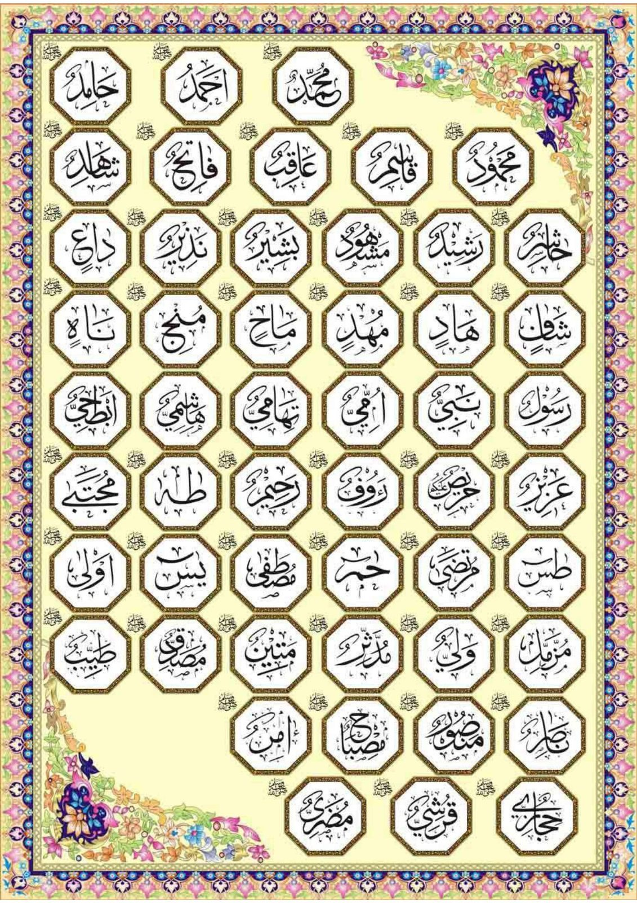
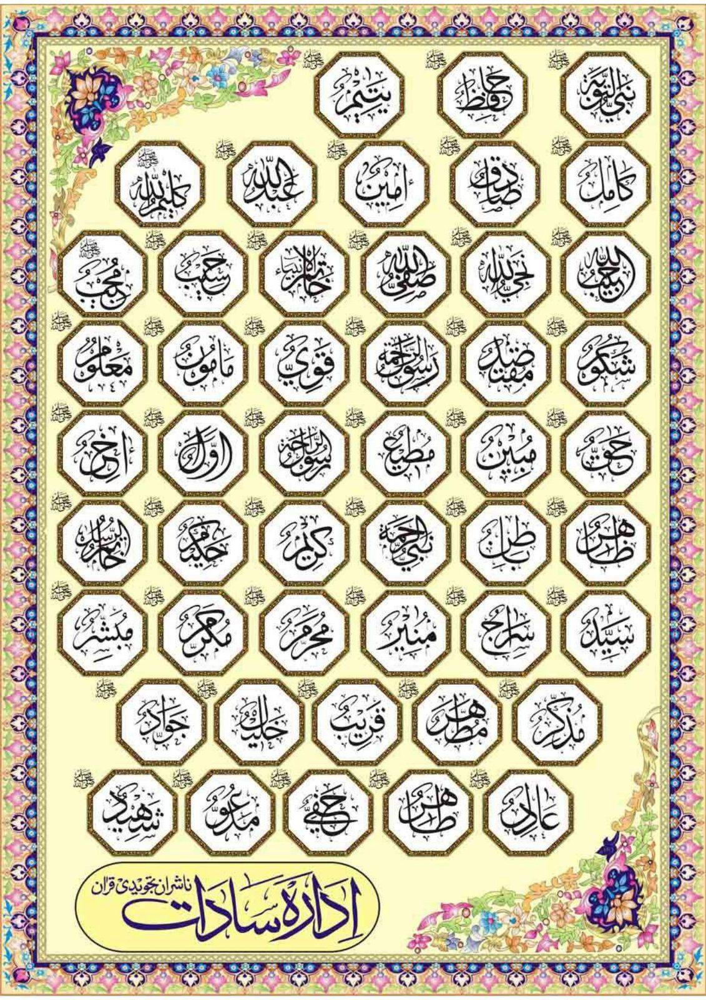

🖍️ کسی لفظ پر ٹیپ کریں — وہ ہائی لائٹ ہو جائے گا۔ نیچے ۱ / ۲ سے ایک یا دو الفاظ چنیں اور اگلا / پچھلا سے آگے پیچھے جائیں۔
نبی کریم ﷺ کے ۲۰۱ مبارک نام (دلائل الخیرات) — عربی، تلفظ اور انگریزی معنی کے ساتھ۔ نیچے اکیڈمی کے اصل پوسٹر بھی موجود ہیں۔
اَللّٰهُمَّ صَلِّ وَ سَلِّمْ عَلَى مَنِ اسْمُهُ سَيِّدُنَا
O Allah! Bless and grant peace to the one whose name is: Sayyiduna (our Master)
201 Asmā’ un-Nabī ﷺ in Dalā’il-ul-Khayrāt
۱
مُحَمَّدٌ
Muḥammad
Most praised one
۲
أَحْمَدُ
Aḥmad
Most praiseworthy
۳
حَامِدٌ
Ḥāmid
One who praises Allah
۴
مَحْمُوْدٌ
Maḥmūd
Praised by all, Laudable
۵
أَحِيْدٌ
Aḥīd
Protector of believers from hell-fire
۶
وَحِيْدٌ
Waḥīd
Unique
۷
مَاحٍ
Māḥin
Obliterator of disbelief
۸
حَاشِرٌ
Ḥāshir
Summoner, Gatherer on the Day of Judgement
۹
عَاقِبٌ
‘Āqib
Successor of all the Prophets
۱۰
طٰهٰ
Ṭāhā
Tāhā
۱۱
يٰسٓ
Yāsīn
Yāsīn
۱۲
طَاهِرٌ
Ṭāhir
Pure, Clean
۱۳
مُطَهَّرٌ
Muṭahhar
Purified (by Allah)
۱۴
طَيِّبٌ
Ṭayyib
Good, Pleasant
۱۵
سَيِّدٌ
Sayyid
Master of all
۱۶
رَسُوْلٌ
Rasūl
the (Prophetic) Messenger (of Allah)
۱۷
نَبِيٌّ
Nabiyy
Prophet
۱۸
رَسُوْلُ الرَّحْمَةِ
Rasūlu’r-raḥmah
the (Prophetic) Messenger of mercy
۱۹
قَيِّمٌ
Qayyim
Right and True, Straight
۲۰
جَامِعٌ
Jāmi‘
One who gathers in himself all perfections
۲۱
مُقْتَفٍ
Muqtafin
One who succeeds all the Prophets
۲۲
مُقَفًّى
Muqaffā
One who is followed
۲۳
رَسُوْلُ الْمَلَاحِمِ
Rasūlu’l malāḥim
the (Prophetic) Messenger of fierce battles against oppressive disbelievers
۲۴
رَسُوْلُ الرَّاحَةِ
Rasūlu’r-rāḥah
the (Prophetic) Messenger of comfort/peaceful repose
۲۵
كَامِلٌ
Kāmil
Perfect
۲۶
إِكْلِيْلٌ
Iklīl
Crown
۲۷
مُدَّثِّرٌ
Muddaththir
One Enveloped in a cloak/mantle
۲۸
مُزَّمِّلٌ
Muzzammil
One Wrapped up in a garment
۲۹
عَبْدُ اللّٰهِ
‘Abdullāh
Allāh’s Ultimate Devotee
۳۰
حَبِيْبُ اللّٰهِ
Ḥabībullāh
the Beloved of Allah
۳۱
صَفِيُّ اللّٰهِ
Ṣafiyyullāh
the Chosen one of Allah
۳۲
نَجِيُّ اللّٰهِ
Najiyyullāh
One in whom Allah confides spiritual secrets
۳۳
كَلِيْمُ اللّٰهِ
Kalīmullāh
One who talked with Allah (on Mi‘rāj)
۳۴
خَاتَمُ الْأَنْبِيَاءِ
Khātamu’l Anbiyā’
the Seal of the Prophets
۳۵
خَاتَمُ الرُّسُلِ
Khātamu’r-Rusul
the Seal of the (Prophetic) Messengers
۳۶
مُحْيٍ
Muḥyin
Reviver of dead hearts with the light of faith
۳۷
مُنْجٍ
Munjin
Leader to salvation
۳۸
مُذَكِّرٌ
Mudhakkir
One who reminds us of Allah, Admonisher
۳۹
نَاصِرٌ
Nāṣir
Helper
۴۰
مَنْصُوْرٌ
Manṣūr
Helped by Allah, Victorious
۴۱
نَبِيُّ الرَّحْمَةِ
Nabiyyu’r-raḥmah
the Prophet of mercy
۴۲
نَبِيُّ التَّوْبَةِ
Nabiyyu’t-tawbah
the Prophet of repentance
۴۳
حَرِيْصٌ عَلَيْكُمْ
Ḥarīṣun ‘alaykum
Full of concern for you
۴۴
مَعْلُوْمٌ
Ma‘lūm
Well-known
۴۵
شَهِيْرٌ
Shahīr
Celebrated, Famous
۴۶
شَاهِدٌ
Shāhid
Beholder
۴۷
شَهِيْدٌ
Shahīd
Witness, Martyr
۴۸
مَشْهُوْدٌ
Mash-hūd
Witnessed, the Attested one
۴۹
بَشِيْرٌ
Bashīr
Bearer of good news
۵۰
مُبَشِّرٌ
Mubashshir
Conveyor of glad tidings
۵۱
نَذِيْرٌ
Nadhīr
Warner
۵۲
مُنْذِرٌ
Mundhir
Warner, Dissuader from sin
۵۳
نُوْرٌ
Nūr
Sacred light
۵۴
سِرَاجٌ
Sirāj
the Sun of Prophethood
۵۵
مِصْبَاحٌ
Miṣbāḥ
Luminous Lamp
۵۶
هُدًى
Hudan
Right guidance
۵۷
مَهْدِيٌّ
Mahdiyy
Rightly guided
۵۸
مُنِيْرٌ
Munīr
Illuminator
۵۹
دَاعٍ
Dā‘in
Inviter to Islam
۶۰
مَدْعُوٌّ
Mad‘uww
One called by Allah
۶۱
مُجِيْبٌ
Mujīb
Responsive
۶۲
مُجَابٌ
Mujāb
One whose prayers/calls are answered
۶۳
حَفِيٌّ
Ḥafiyy
Welcoming, Hospitable, Well-informed
۶۴
عَفُوٌّ
‘Afuww
Pardoner
۶۵
وَلِيٌّ
Waliyy
Friend of Allah, Friend of believers
۶۶
حَقٌّ
Ḥaqq
Truth
۶۷
قَوِيٌّ
Qawiyy
Strong, Powerful
۶۸
أَمِيْنٌ
Amīn
Trustworthy
۶۹
مَأْمُوْنٌ
Ma’mūn
Trusted
۷۰
كَرِيْمٌ
Karīm
Generous, Noble
۷۱
مُكَرَّمٌ
Mukarram
the Ennobled one, Honoured, Venerable
۷۲
مَكِيْنٌ
Makīn
Firm, Unshakeable
۷۳
مَتِيْنٌ
Matīn
Firm, Authoritative
۷۴
مُبِيْنٌ
Mubīn
Clear, Evident
۷۵
مُؤَمِّلٌ
Mu’ammil
Hopeful
۷۶
وَصُوْلٌ
Waṣūl
Uniter
۷۷
ذُوْ قُوَّةٍ
Dhū quwwah
Possessor of power
۷۸
ذُوْ حُرْمَةٍ
Dhū ḥurmah
Possessor of sacredness
۷۹
ذُوْ مَكَانَةٍ
Dhū makānah
Possessor of firmly established high position
۸۰
ذُوْ عِزٍّ
Dhū ‘izz
Possessor of might/honour
۸۱
ذُوْ فَضْلٍ
Dhū Faḍl
Possessor of Allah’s grace/ bounty
۸۲
مُطَاعٌ
Muṭā‘
One who is obeyed
۸۳
مُطِيْعٌ
Muṭī‘
One obedient to Allah
۸۴
قَدَمُ صِدْقٍ
Qadamu ṣidqin
One with a sincere footing
۸۵
رَحْمَةٌ
Raḥmah
Mercy, Compassion
۸۶
بُشْرٰى
Bushrā
Glad tidings
۸۷
غَوْثٌ
Ghawth
Saviour
۸۸
غَيْثٌ
Ghayth
Rain of mercy, brings dead hearts to life
۸۹
غِيَاثٌ
Ghiyāth
Helper, Saviour
۹۰
نِعْمَةُ اللّٰهِ
Ni‘matullāh
Favour of Allah
۹۱
هَدِيَّةُ اللّٰهِ
Hadiyyatullāh
the Gift of Allah
۹۲
عُرْوَةٌ وُثْقَى
‘Urwatun wuthqā
the Firm Tie (that binds man to Allah)
۹۳
صِرَاطُ اللّٰهِ
Ṣirāṭullāh
the Path leading to Allah
۹۴
صِرَاطٌ مُّسْتَقِيْمٌ
Ṣirāṭun mustaqīm
the Straight Path
۹۵
ذِكْرُ اللّٰهِ
Dhikrullāh
Personification of the remembrance of Allah
۹۶
سَيْفُ اللّٰهِ
Sayfullāh
the sword of Allah
۹۷
حِزْبُ اللّٰهِ
Ḥizbullāh
Allah's partisan
۹۸
اَلنَّجْمُ الثَّاقِبُ
an-Najmu’th-thāqib
the Piercing Star
۹۹
مُصْطَفَى
Muṣṭafā
Divinely selected
۱۰۰
مُجْتَبَى
Mujtabā
the Chosen one
۱۰۱
مُنْتَقَى
Muntaqā
Chosen for his purity
۱۰۲
أُمِّيٌّ
Ummiyy
not taught by a human (but directly by Allah)
۱۰۳
مُخْتَارٌ
Mukhtār
the Chosen one, Free to choose
۱۰۴
أَجِيْرٌ
Ajīr
One who selflessly labours for Allah, rewarded by Allah
۱۰۵
جَبَّارٌ
Jabbār
Compeller
۱۰۶
أَبُو الْقَاسِمِ
Abu’l Qāsim
the father of Qasim
۱۰۷
أَبُو الطَّاهِرِ
Abu’ṭ-Ṭāhir
the father of the Pure (‘Abdullah)
۱۰۸
أَبُو الطَّيِّبِ
Abu’ṭ-Ṭayyib
the father of the Pleasant (‘Abdullah)
۱۰۹
أَبُو إِبْرَاهِيْمَ
Abū Ibrāhīm
the father of Ibrahim
۱۱۰
مُشَفَّعٌ
Mushaffa‘
the Accepted Intercessor
۱۱۱
شَفِيْعٌ
Shafī‘
Intercessor
۱۱۲
صَالِحٌ
Ṣāliḥ
Righteous, Virtuous, Pious, Devout
۱۱۳
مُصْلِحٌ
Muṣliḥ
Conciliator, Peacemaker, Upright
۱۱۴
مُهَيْمِنٌ
Muhaymin
Protector, Guardian
۱۱۵
صَادِقٌ
Ṣādiq
Truthful
۱۱۶
مُصَدِّقٌ
Muṣaddiq
One proved true, Confirmer, Verifier
۱۱۷
صِدْقٌ
Ṣidq
Truthfulness, Sincerity
۱۱۸
سَيِّدُ الْمُرْسَلِيْنَ
Sayyidu’l Mursalīn
Master of all the (Prophetic) Messengers (of Allah)
۱۱۹
إِمَامُ الْمُتَّقِيْنَ
Imāmu’l muttaqīn
Leader of the pious (who fear Allah)
۱۲۰
قَائِدُ الْغُرِّ الْمُحَجَّلِيْنَ
Qā’idu’l ghurri’l muḥajjalīn
Leader of those with shining faces and limbs
۱۲۱
خَلِيْلُ الرَّحْمٰنِ
Khalīlu’r-Raḥmān
the Friend of The Merciful Allah
۱۲۲
بَرٌّ
Barr
Righteous, Pious
۱۲۳
مَبَرٌّ
Mabarr
Essence of piety
۱۲۴
وَجِيْهٌ
Wajīh
Honourable, Illustrious
۱۲۵
نَصِيْحٌ
Naṣīḥ
Sincere Advisor
۱۲۶
نَاصِحٌ
Nāṣiḥ
True Counsellor
۱۲۷
وَكِيْلٌ
Wakīl
Faithful Trustee
۱۲۸
مُتَوَكِّلٌ
Mutawakkil
One who puts all his trust in Allah
۱۲۹
كَفِيْلٌ
Kafīl
Guarantor, Surety
۱۳۰
شَفِيْقٌ
Shafīq
Compassionate, Kind
۱۳۱
مُقِيْمُ السُّنَّةِ
Muqīmu’s-Sunnah
Establisher of the Sunnah
۱۳۲
مُقَدَّسٌ
Muqaddas
Sanctified one
۱۳۳
رُوْحُ الْقُدُسِ
Rūḥu’l qudus
Spirit of purity
۱۳۴
رُوْحُ الْحَقِّ
Rūḥu’l ḥaqq
Spirit of truth
۱۳۵
رُوْحُ الْقِسْطِ
Rūḥu’l qisṭ
Spirit of justice
۱۳۶
كَافٍ
Kāfin
One who suffices here and in the Hereafter
۱۳۷
مُكْتَفٍ
Muktafin
Contented (with little)
۱۳۸
بَالِغٌ
Bāligh
One who has attained spiritual perfection
۱۳۹
مُبَلِّغٌ
Muballigh
the Deliverer of Allah’s Revelations
۱۴۰
شَافٍ
Shāfin
Healer
۱۴۱
وَاصِلٌ
Wāṣil
the one who completed his journey to Allah
۱۴۲
مَوْصُوْلٌ
Mawṣūl
One bound by Allah
۱۴۳
سَابِقٌ
Sābiq
First and foremost
۱۴۴
سَائِقٌ
Sā’iq
Leading/driving force, one who urges on
۱۴۵
هَادٍ
Hādin
Guide
۱۴۶
مُهْدٍ
Muhdin
One who gives guidance
۱۴۷
مُقَدَّمٌ
Muqaddam
First and foremost, in the forefront
۱۴۸
عَزِيْزٌ
‘Azīz
Mighty, Honourable
۱۴۹
فَاضِلٌ
Fāḍil
Most Outstanding, Virtuous
۱۵۰
مُفَضَّلٌ
Mufaḍḍal
the Favoured one of Allah
۱۵۱
فَاتِحٌ
Fātiḥ
Victorious, Opener (of the doors of mercy)
۱۵۲
مِفْتَاحٌ
Miftāḥ
the Key
۱۵۳
مِفْتَاحُ الرَّحْمَةِ
Miftāḥu’r-Raḥmah
the Key to Allah’s Mercy
۱۵۴
مِفْتَاحُ الْجَنَّةِ
Miftāḥu’l Jannah
the Key to Paradise
۱۵۵
عَلَمُ الْإِيْمَانِ
‘Alamu’l Īmān
Symbol of faith
۱۵۶
عَلَمُ الْيَقِيْنِ
‘Alamu’l yaqīn
Symbol of certitude
۱۵۷
دَلِيْلُ الْخَيْرَاتِ
Dalīlu’l khayrāt
Guide to good deeds, Proof of good deeds
۱۵۸
مُصَحِّحُ الْحَسَنَاتِ
Muṣaḥḥiḥu’l ḥasanāt
Perfecter of good deeds
۱۵۹
مُقِيْلُ الْعَثَرَاتِ
Muqīlu’l ‘atharāt
Helper of those who stumble
۱۶۰
صَفُوْحٌ عَنِ الزَّلَّاتِ
Ṣafūḥun ‘aniz-zallāt
Forgiver of offences
۱۶۱
صَاحِبُ الشَّفَاعَةِ
Ṣāḥibu’sh-shafā‘ah
One endowed with intercession
۱۶۲
صَاحِبُ الْمَقَامِ
Ṣāḥibu’l maqām
Possessor of the highest rank/position
۱۶۳
صَاحِبُ الْقَدَمِ
Ṣāḥibu’l qadam
One endued with precedence/lofty rank
۱۶۴
مَخْصُوْصٌ بِالْعِزِّ
Makhṣūṣ(un) bi’l ‘izz
Distinguished with exclusively special might/honour
۱۶۵
مَخْصُوْصٌ بِالْمَجْدِ
Makhṣūṣ(un) bi’l majd
Distinguished with exclusively special glory
۱۶۶
مَخْصُوْصٌ بِالشَّرَفِ
Makhṣūṣ(un) bi’sh-sharaf
Distinguished with exclusively special nobility
۱۶۷
صَاحِبُ الْوَسِيْلَةِ
Ṣāḥibu’l wasīlah
Possessor of the means (to Allah’s Mercy)
۱۶۸
صَاحِبُ السَّيْفِ
Ṣāḥibu’s-sayf
Owner of the sword against Allah’s enemies
۱۶۹
صَاحِبُ الْفَضِيْلَةِ
Ṣāḥibu’l faḍīlah
Possessor of Allah’s Grace
۱۷۰
صَاحِبُ الْإِزَارِ
Ṣāḥibu’l izār
Owner of the wrapper/ covering of Prophethood
۱۷۱
صَاحِبُ الْحُجَّةِ
Ṣāḥibu’l ḥujjah
Possessor of the proof
۱۷۲
صَاحِبُ السُّلْطَانِ
Ṣāḥibus-sulṭān
Owner of dominion/authority
۱۷۳
صَاحِبُ الرِّدَاءِ
Ṣāḥibu’r-ridā’
Owner of the covering cloth
۱۷۴
صَاحِبُ الدَّرَجَةِ الرَّفِيْعَةِ
Ṣāḥibu’d-darajati’r-rafī‘ah
One endowed with the exalted position/rank
۱۷۵
صَاحِبُ التَّاجِ
Ṣāḥibu’t-tāj
the Crowned one (on the night of Mi‘rāj)
۱۷۶
صَاحِبُ الْمِغْفَرِ
Ṣāḥibu’l mighfar
One who wears the helmet
۱۷۷
صَاحِبُ اللِّوَاءِ
Ṣāḥibu’l-liwā’
Holder of the banner
۱۷۸
صَاحِبُ الْمِعْرَاجِ
Ṣāḥibu’l Mi‘rāj
Master of heavenly ascension
۱۷۹
صَاحِبُ الْقَضِيْبِ
Ṣāḥibu’l qaḍīb
Holder of the rod/staff (of Prophethood)
۱۸۰
صَاحِبُ الْبُرَاقِ
Ṣāḥibu’l burāq
the Rider of the Burāq
۱۸۱
صَاحِبُ الْخَاتَمِ
Ṣāḥibu’l khātam
Possessor of the Seal (of Prophethood)
۱۸۲
صَاحِبُ الْعَلَامَةِ
Ṣāḥibu’l ‘alāmah
Possessor of the Sign (of Prophethood)
۱۸۳
صَاحِبُ الْبُرْهَانِ
Ṣāḥibu’l Burhān
One endowed with the clear proof
۱۸۴
صَاحِبُ الْبَيَانِ
Ṣāḥibu’l Bayān
the Possessor of the Qur’an
۱۸۵
فَصِيْحُ اللِّسَانِ
Faṣīḥu’l-lisān
Eloquent and effective of speech
۱۸۶
مُطَهَّرُ الْجَنَانِ
Muṭahharu’l janān
One with a purified heart
۱۸۷
رَؤُوْفٌ
Ra’ūf
Clement, Most Kind
۱۸۸
رَحِيْمٌ
Raḥīm
Merciful
۱۸۹
أُذُنُ خَيْرٍ
Udhunu khayr
Hearer of good
۱۹۰
صَحِيْحُ الْإِسْلَامِ
Ṣaḥīḥu’l Islām
Establisher of the correct Message of Islam
۱۹۱
سَيِّدُ الْكَوْنَيْنِ
Sayyidu’l kawnayn
Master of this world and the Hereafter
۱۹۲
عَيْنُ النَّعِيْمِ
‘Aynu’n-na‘īm
Source of Allah’s Blessings
۱۹۳
عَيْنُ الْغُرِّ
‘Aynu’l ghurr
Source of beauty/radiance
۱۹۴
سَعْدُ اللّٰهِ
Sa‘dullāh
Joy of Allah
۱۹۵
سَعْدُ الْخَلْقِ
Sa‘du’l khalq
Joy of all creation
۱۹۶
خَطِيْبُ الْأُمَمِ
Khaṭību’l umam
Preacher to all humanity
۱۹۷
عَلَمُ الْهُدٰى
‘Alamu’l hudā
the Sign of the guidance
۱۹۸
كَاشِفُ الْكُرَبِ
Kāshifu’l kurab
Remover of hardships/distress
۱۹۹
رَافِعُ الرُّتَبِ
Rāfi‘ur-rutab
Raiser of the ranks of believers
۲۰۰
عِزُّ الْعَرَبِ
‘Izzu’l ‘Arab
Honour of the Arabs
۲۰۱
صَاحِبُ الْفَرَجِ
Ṣāḥibu’l faraj
Source of bliss/comfort
صَلَّى اللّٰهُ عَلَيْهِ وَ عَلَى آلِهِ وَسَلَّمَ
May Allah bless him and his Family and grant him peace
اکیڈمی کے اصل پوسٹر

